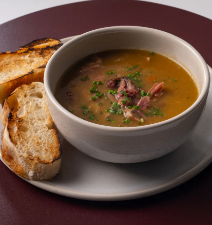

PEA & HAM SOUP
Credit: Janice Richardson
Ingredients
 Ingredients
Ingredients

| Green split peas | 500 g packet |
|---|---|
| Brown onions, chopped | 2 |
| Carrots, peeled & chopped | 3 |
| Celery sticks, chopped | 3 |
| Garlic cloves, chopped | 2 |
| Ham hock | 1 large (~750 g) |
| Water | 12 cups |
| Chicken stock cube | 1 |
| Salt & black pepper | to taste |
| Frozen peas (optional) | handful, to finish |

Method
- Follow the cooking directions on the back of the split pea packet (usually a soak or rinse step, depending on the brand).
- Optional: heat a tablespoon of oil in a large pot and fry the chopped onion and garlic until soft.
- Add the split peas, carrot, celery, ham hock, water, chicken stock cube, salt and pepper to the pot.
- Bring to the boil, then reduce to a low simmer. Leave to simmer for around 2 hours, until the peas are completely soft and the ham is falling off the bone.
- Remove the ham hock. Shred the meat off the bone and set aside. Discard the bone, skin and fat.
- Let the soup cool slightly, then blend smooth with a stick blender (bamix). Return the shredded ham to the pot.
- When re-heating to serve, optionally stir in a handful of frozen peas for fresh colour and texture.